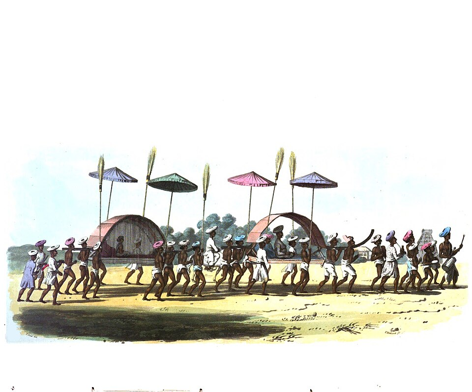

Bale-balean: Teater Adat Perkawinan Sasak

Sekilas Sejarah
"Bale" berarti rumah. Permainan ini adalah bentuk teater anak-anak dari Lombok Timur yang meniru prosesi upacara adat perkawinan Suku Sasak, mulai dari kunjungan (*midang*) hingga arak-arakan.
Alat & Persiapan
- Rumah-rumahan: Dibuat dari daun pisang, bambu, dan ranting.
- Properti: Tanah liat dibentuk menyerupai makanan, piring seng, dan kaleng bekas sebagai alat musik gamelan.
- Pemain: Anak-anak berbagi peran menjadi pengantin, pengiring, dan penabuh musik.
Cara Bermain
- Anak-anak berbagi peran dan membangun rumah-rumahan dari bahan alam.
- Dilakukan prosesi "memayas" (menghias pengantin tiruan).
- Diadakan arak-arakan pengantin diiringi musik dari kaleng dan seng yang ditabuh.
- Ada juga prosesi pura-pura memandikan pengantin yang diakhiri sorak-sorai.
- Permainan ditutup dengan acara menari bersama (*bejanggeran*), lalu rumah-rumahan dibongkar.